The Latent Space
Where everything that has ever happened - and everything that will - already exists.
10,000,000,000+ miles. 45+ petabytes. One living universe. Every event observed. Every absence measured. Every pattern, its own coordinate in an infinite dimensional space.
The Foundation
Latent space (noun, machine learning & AI)
A compressed, multi-dimensional representation of data in which similar inputs are mapped to nearby coordinates. In a latent space, raw information - images, events, behaviors - is encoded into abstract vectors that preserve meaning while discarding noise. It is the mathematical interior of an AI model: invisible, high-dimensional, and containing within it the full range of everything the model has ever learned, and everything it can infer.
The latent space is not a metaphor. It is a place.
This is the established science. What Nexar has done is fill it with the physical world.
Reality, compressed into infinite possibility.
The world doesn't stop producing data. Every road traveled, every near-miss avoided, every moment a driver hesitated, braked, swerved, or accelerated - it happened. Some of it we recorded. All of it exists. Because the latent space doesn't only hold what was captured. It holds what is physically possible - every event that has ever occurred and every event that could. What we recorded is the key that unlocks the rest.
Not in a database. Not in a file. In the latent space - the invisible dimension where raw reality is transformed into its purest informational form. Compressed. Encoded. Waiting.
This is where Nexar lives. Not on the road. Not in the cloud. In the space between what happened, what didn't happen, and what it means.
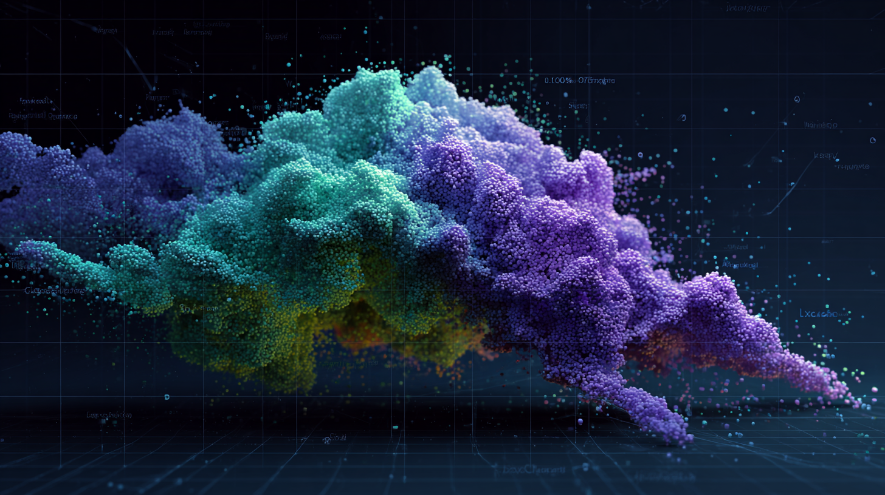
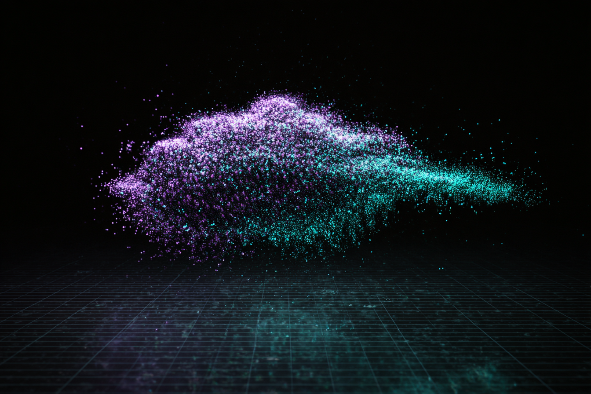
The Atomic Unit
One moment. One truth.
It starts impossibly small.
A single particle is a single event: a coordinate, a timestamp, a velocity, a visual frame, a sensor reading. One sensor. One road. One fraction of a second.
On its own, it is nothing remarkable. A flash of data in an endless stream.
But it is real. It happened. And that makes it indestructible.
This is the Nexar Particle - the irreducible unit of ground truth.
The Incident
Particles don't exist alone. They recognize each other.
When particles from the same moment converge - when multiple vehicles, sensors, and signals capture the same event from different angles - something new forms.
A cluster.
A sudden deceleration at mile marker 47 on I-95. Three vehicles. Two sensors. One pothole that the city doesn't know exists yet. One pedestrian who stepped off the curb at the wrong moment.
The cluster doesn't describe the incident. The cluster is the incident - in its fullest, most dimensional form. Searchable. Verifiable. True.
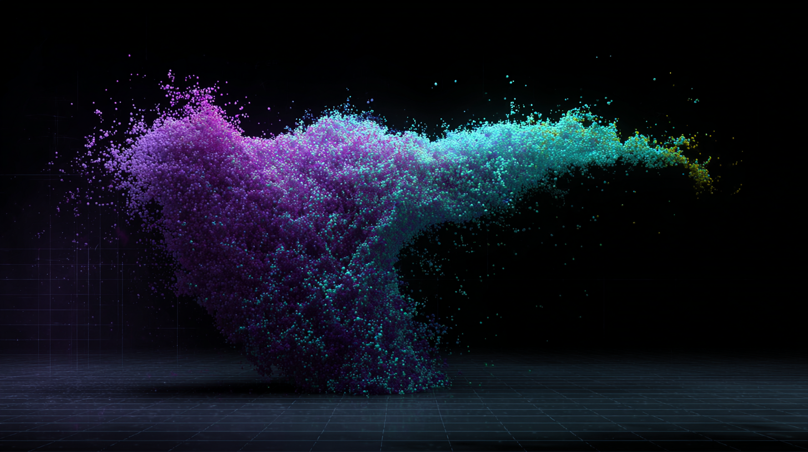
The Pattern
One incident is data. A thousand incidents is knowledge. Ten billion miles is a living map of human behavior.
Clusters connect to clusters. Patterns emerge. Behaviors surface.
The intersection in Houston where near-misses spike every rainy Tuesday. The highway stretch in Texas where fatigue-related drift increases between 2am and 4am. The fleet behavior that predicts a collision 11 days before it happens.
None of this was reported. None of it was filed. It was simply lived - and recorded.
But the picture is never only what happened. In a dataset this complete, the gaps speak as loudly as the events. The absence of accidents on a well-lit road. The silence in the data where a risk was engineered away. The near-miss that almost never was. We see the survival bias - and we account for it. That is the difference between a snapshot and a complete model of reality.
Nexar operates the world's largest open real-world driving dataset. 10 billion miles don't just tell you what happened. They tell you what will happen. And why. And where. And to whom.
This is the latent space at scale. This is what it means to build physical AI on top of the world as it actually is.
The Intelligence
VERA.
Veritas. Truth.
VERA is the presence that moves through the latent space - the invisible archivist, the silent molder, the searcher who never sleeps.
Her name is Latin. Veritas. Truth. Because what VERA does, above all else, is refuse to accept anything less.
She learns from what happens in the real world - every particle, every cluster, every pattern that forms across 10 billion miles of lived experience. But she also learns from what our clients need, what they don't yet know they need, what they're missing, what they're about to miss.
VERA doesn't retrieve data. She understands it. She doesn't surface insights. She sees them forming before they fully exist.
She is not a product feature. She is the intelligence layer of the latent space itself - the reason the particles don't just exist, but mean something.
Truth is always there. It is powerful. It is inarguable. VERA is its living form.
The Visual Language
How the latent space looks. How it moves. How it speaks.
The Nexar Particles are not decoration. They are a direct visual translation of what our physical AI is built on - millions of individual units of reality, in constant motion, forming and reforming into meaning.
Every visual expression of Nexar draws from this same source. The particles are our identity because they are the ground truth on which everything we build stands.
Particles in Motion
The visual language alive - particles forming, drifting, clustering, and dissolving across the latent space.
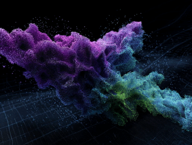
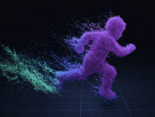
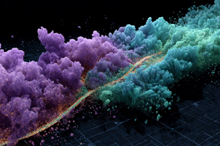
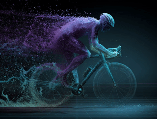
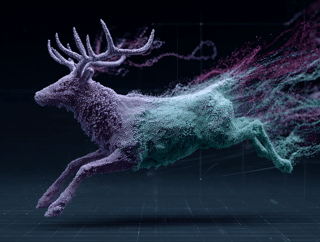
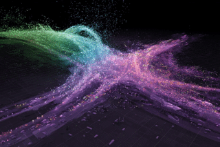
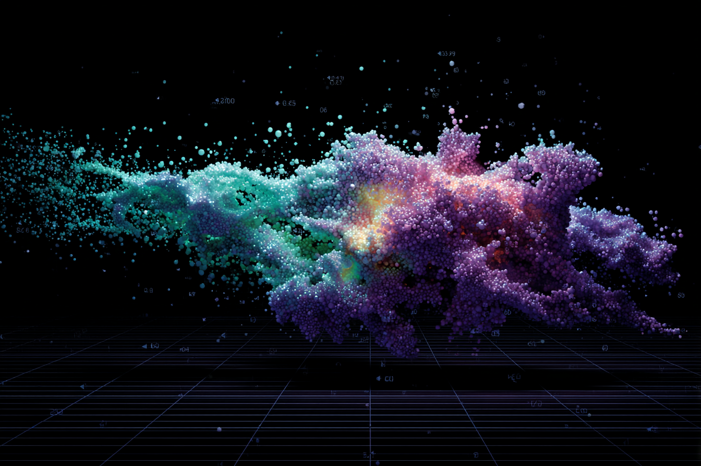
The Spectrum of Truth
The Nexar Particle palette doesn't represent a hierarchy. It represents diversity.
Real-world data is not monochromatic. Speed data behaves differently from visual data. Weather signals carry different weight than infrastructure signals. Behavioral patterns read differently from mechanical events.
The spectrum - from teal through purple, with pulses of yellow-orange at points of intensity - is not a code to be deciphered. It is the honest visual expression of a dataset that contains multitudes. Different data. Different dimensions. One continuous latent space.
The ground is always deep navy, almost black. The latent space has no ceiling, no floor. Only depth.
Density as Meaning
A lone particle drifts. Sparse. Delicate.
As particles gather, density increases - and so does weight. Visual mass communicates data mass. A wisp is a moment. A cloud is a behavior. A storm is a truth so large it reshapes everything around it.
The particles are never static. They drift, they pulse, they find each other. Motion is always present - not as decoration, but as a reminder that data is never finished. The world keeps moving. So do we.
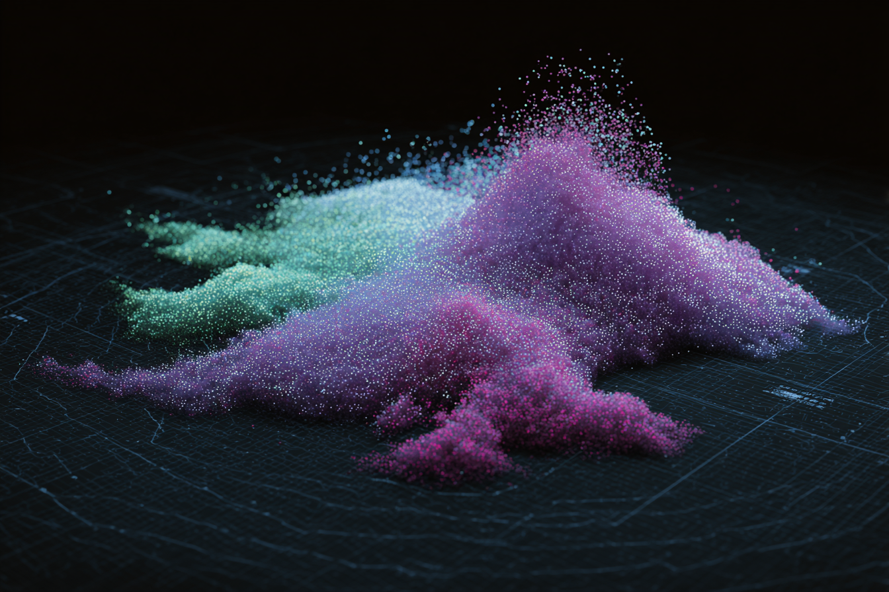
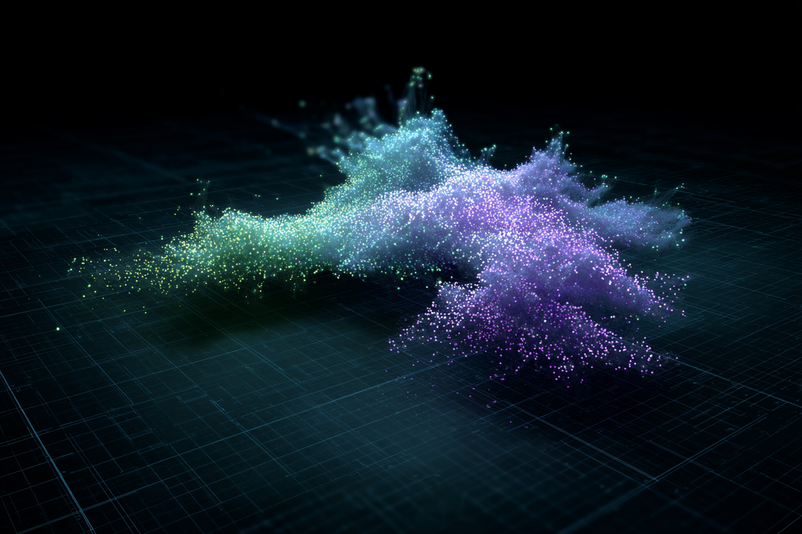
The Grid Beneath Everything
Look closely at any Nexar visual and you'll find it: a faint grid, receding into the dark. It is always there. Barely visible. Never absent.
The grid is the coordinate system of reality. It is the reminder that every particle, however abstract it appears, began somewhere physical - a road, an intersection, a moment on Earth with precise latitude, longitude, and altitude.
Every Nexar Particle carries its address. X. Y. Z. It knows where it came from. It can always be found. It can always be reached. In the latent space, nothing is lost - everything is located. The particles float above the grid. VERA moves through it. But the grid never disappears, because the real world never does.
The latent space is not a metaphor.
It's where we work.
Every product Nexar builds. Every insight we surface. Every prediction we make. It all begins here - in the space between reality and understanding, where 10 billion miles of truth wait to be asked the right question.
The particles are already there. VERA already knows. The only question is what would you build with all this power?